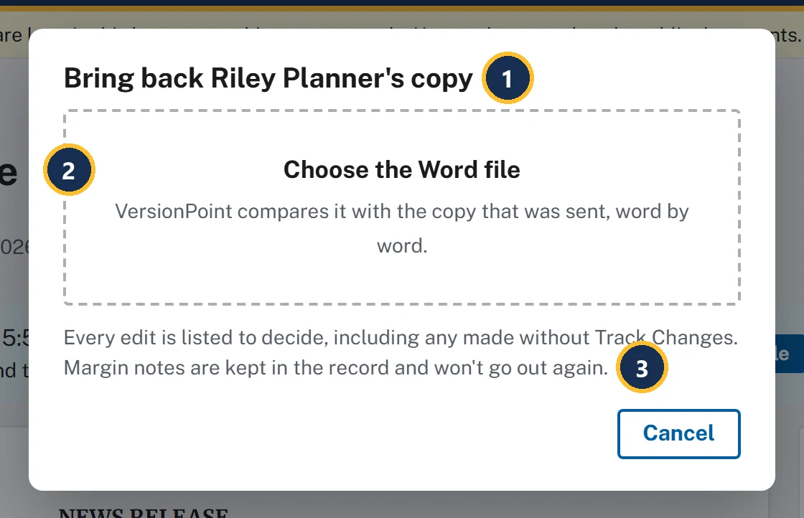
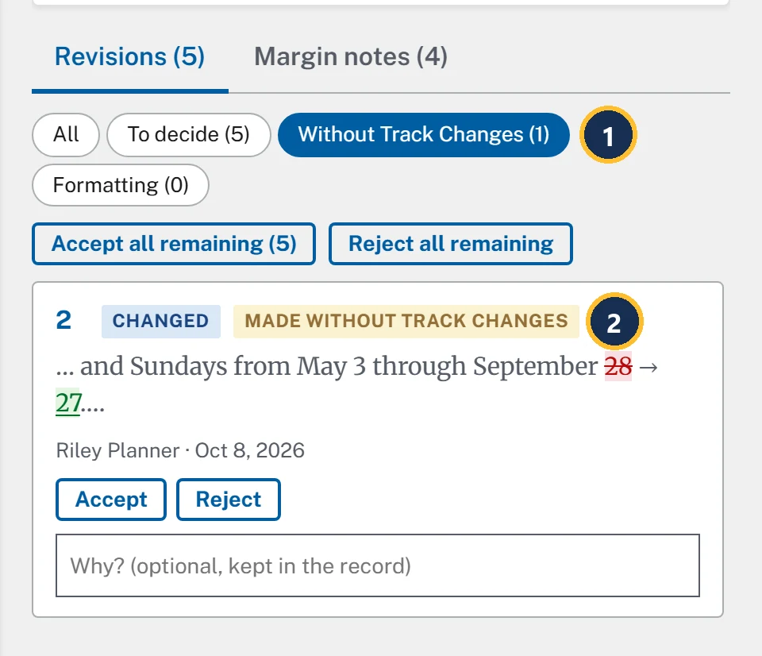
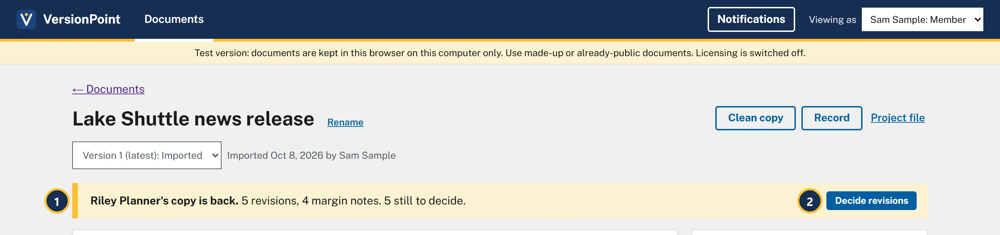
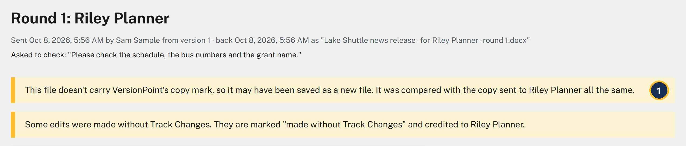
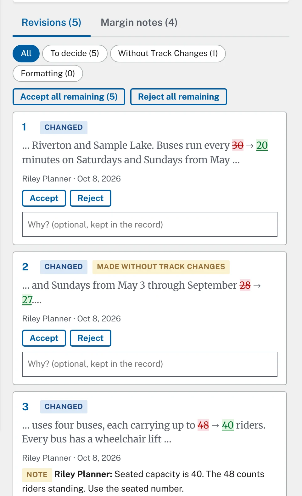

Lesson 46 minutesThe Lake Shuttle, Riley Planner's returned copy
Bring it back
Take Riley Planner's returned file back into VersionPoint, and read what the app tells you about it.
Why it matters
This is where VersionPoint earns its keep. It reads every tracked change and margin note, compares the whole file with the copy you sent, and turns any edit made without Track Changes into a revision in the reviewer's name. Nothing slips in unseen, even when a reviewer works around the lock.
Watch
Riley sends it back
In the course, the reviewer's desk plays Riley. You give it the copy you downloaded in lesson 2, and it hands back the file Riley would have emailed you.
![The reviewer's desk after a copy was chosen. Callout 1 marks the box Choose the copy you downloaded, or drop it here. Callout 2 marks the result: Riley Planner sent it back (Riverton Transit Authority, for lesson 4), with a list of six things Riley did: changed every 30 minutes to every 20 minutes with Track Changes; changed September 28 to September 27 with Track Changes off; changed up to 48 riders to up to 40 riders with Track Changes and left a note on it; deleted and room for two bicycles with Track Changes and left a note on it; added The grant pays for the shuttle through [insert year]. with Track Changes; left a note on Clean Commute Grant, and Drew Grants replied to it. Callout 3 marks the Download the returned file button.](assets/l4-desk-a.webp)
- Where you give the desk your review copy.
- What Riley did. One edit was made with Track Changes off: watch for it in VersionPoint.
- Download the returned file saves the file Riley sent back. It keeps the copy's name, the way Word does when a reviewer saves.
Bring it back

- The form names whose copy it expects: Bring back Riley Planner's copy.
- Choose the Word file. VersionPoint compares it with the copy that was sent, word by word.
- What happens next: every edit is listed to decide, and the margin notes stay in the record.
![The round page, Round 1: Riley Planner. Callout 1 marks the heading, with the line under it: Sent by Sam Sample from version 1, back as Lake Shuttle news release - for Riley Planner - round 1.docx. Callout 2 marks Asked to check: Please check the schedule, the bus numbers and the grant name. Callout 3 marks two yellow warnings: The Track Changes lock was taken off this copy. Anything changed without tracking is marked below. And: Some edits were made without Track Changes. They are marked made without Track Changes and credited to Riley Planner. Callout 4 marks the release as it came back, with added text underlined and removed text struck through, each edit numbered: 30 removed and 20 added (1), 28 removed and 27 added (2), 48 removed and 40 added (3), and room for two bicycles removed (4). Callout 5 marks 0 of 5 decided, beside a greyed-out Finish button. Callout 6 marks the tabs Revisions (5) and Margin notes (4). Callout 7 marks the filters All, To decide (5), Without Track Changes (1) and Formatting (0). Below them are Accept all remaining (5), Reject all remaining, and card 1, Changed, 30 to 20, with Accept, Reject and a Why? box.](assets/l4-round-a.webp)
- Round 1: Riley Planner, when it went out, from which version, and the name of the file that came back.
- Asked to check: your note to Riley from lesson 2.
- Warnings. Riley's file brings two: the lock was taken off, and some edits were made without Track Changes.
- The release as it came back. Added text is underlined, removed text is struck through, and each edit carries the number of its card.
- 0 of 5 decided. Finish stays greyed out until every revision is decided (lesson 5).
- Two tabs: Revisions (5) and Margin notes (4).
- Filters for the revision list. Without Track Changes (1) shows only the edit Riley made with the lock off.
![The Margin notes (4) tab. The line at the top says: These came in the returned file. They are kept with the record and never go out again. Callout 1 marks Riley Planner's note on the quoted words up to 48 riders: Seated capacity is 40. The 48 counts riders standing. Use the seated number. Callout 2 marks Riley Planner's note on the quoted words and room for two bicycles: Bike racks are not on the buses yet. Take this out until they are. Callout 3 marks Drew Grants's reply under Riley's note on Clean Commute Grant: The full name is the Clean Commute Grant Program.](assets/l4-notes-a.webp)
- A note shows the words it's on, in quotes, then the note. The quote is the words as they read in the copy you sent, so here it's up to 48 riders, before Riley's change.
- Riley's note on the bicycle line. Riley deleted those words, and the note still quotes them. Read it beside revision 4.
- Drew Grants's reply to Riley's grant note. Replies count in the tab's number, so four notes here are three notes and a reply.

- The filter Without Track Changes (1).
- The tag Made without Track Changes. VersionPoint found the edit by comparing the files, and credits it to Riley like any other.

- Riley Planner's copy is back. with the count of revisions and notes, and how many are still to decide. On Documents, the release's tag now reads 5 revisions to decide.
- Decide revisions takes you back to the round page (lesson 5).
Warnings the app can give
Read every yellow warning on the round page before you decide anything. Each one tells you something about how the file was handled on the reviewer's side.
| The app says | What happened | What you do |
|---|---|---|
| The Track Changes lock was taken off this copy. Anything changed without tracking is marked below. | The reviewer, or their editor, removed the lock. | Decide as usual. Check the Without Track Changes filter first. |
| Some edits were made without Track Changes. They are marked “made without Track Changes” and credited to Riley Planner. | VersionPoint compared the files and found edits Word didn't track. | Decide each one on the facts, like any other edit. |
| This file doesn't carry VersionPoint's copy mark, so it may have been saved as a new file. It was compared with the copy sent to Riley Planner all the same. | The reviewer pasted the text into a new file, or saved it in a way that dropped the mark. | Make sure it's really Riley's file on this release, then decide as usual. |
| This file reads very differently from the copy that was sent. Check it's the right document before deciding. | The file barely matches what you sent. | Check it's the reviewer's file on this release before you decide anything. |

- The copy-mark warning. VersionPoint can't check whose copy it is, so it compares the file with the copy it sent to Riley.
Some files don't get in at all. A copy from another round is turned away with a message like This is the copy for round 1 (Riley Planner), not the one for round 4., a copy of another document with This copy belongs to another document: …, and a file that isn't Word with Bring back the Word file (.docx). Nothing is brought in, so choose the right file and try again.
Try it
- The reviewer's desk: plays the reviewer on a copy you downloaded.
Start on the document page for Lake Shuttle news release, where lesson 2 left it: Out with Riley Planner.
- Find the review copy you downloaded in lesson 2, Lake Shuttle news release - for Riley Planner - round 1.docx. If you can't find it, choose Download the copy again on the document page.
- Open the reviewer's desk from the practice files above. Leave Reviewer on Work it out from the file name.
- Choose Choose the copy you downloaded and pick the review copy. The desk says Riley Planner sent it back and lists what Riley did.
- Choose Download the returned file. If your browser adds a number to the name, such as (1), that's fine: VersionPoint knows the file by its copy mark, not its name.
- In VersionPoint, on the document page, choose Bring back the returned file.
- Choose Choose the Word file and pick the file you just downloaded from the desk. The round page opens by itself, with two warnings.
- Choose Margin notes (4) and read Riley's three notes and Drew Grants's reply.
- Choose Revisions (5), then Without Track Changes (1). Only revision 2 shows: September 28 → 27.
- Choose All to see all five revisions again. Don't decide anything yet.
Check your work

Watch out for
Quick check
Pick an answer to see why it is or isn't right. Nothing is scored or sent anywhere.
Question 1
Riley's copy comes back with a yellow warning: the Track Changes lock was taken off. What do you do?
Question 2
Your program office pasted the draft into a fresh Word file, edited it there and sent that back. What will VersionPoint do?
Question 3
You bring back a file and get This is the copy for round 1 (Riley Planner), not the one for round 4. What happened?
Lesson 5 decides each of Riley's five revisions, and finishes the round.